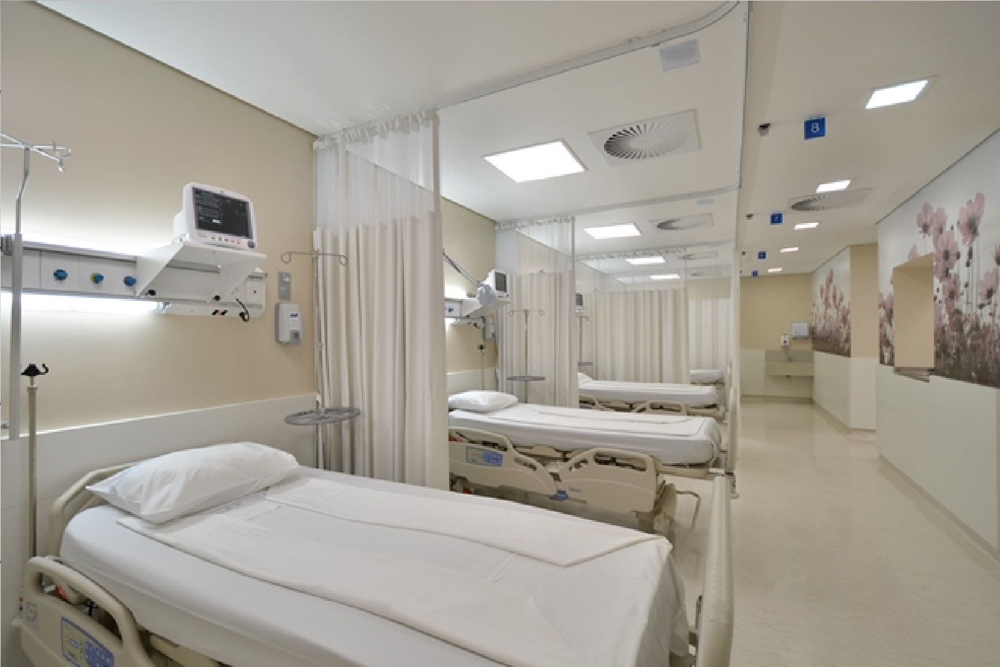

As consultas de pré-natal devem começar assim que se descobre a gravidez. A mulher deve receber importantes informações sobre a questão nutricional, o aumento de peso e os primeiros cuidados com o bebê. Saiba mais detalhes de cada exame, como devem ser feitos e seus resultados.
